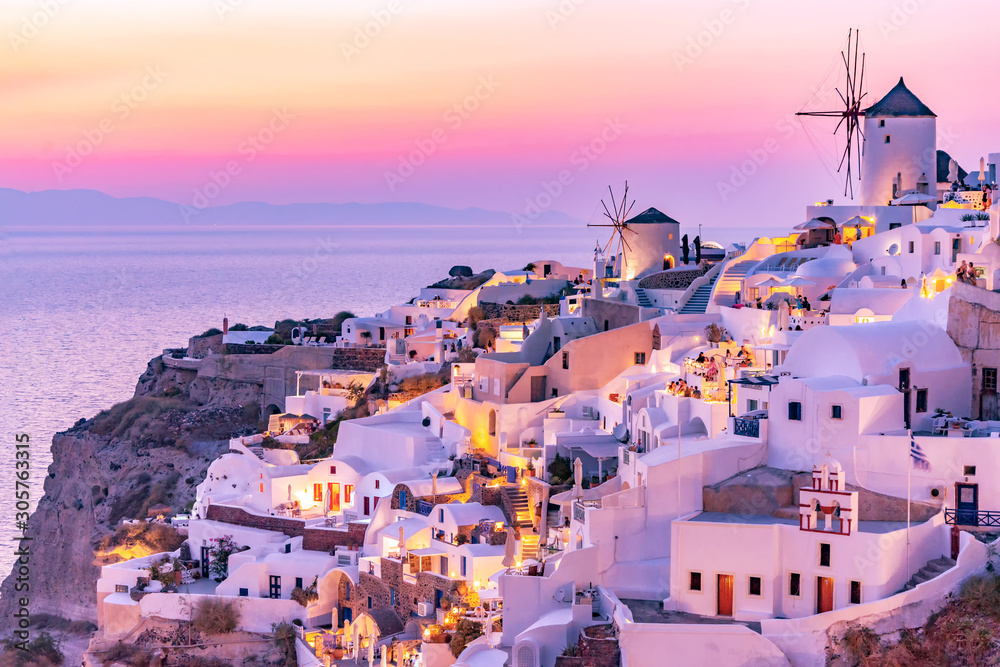

Multimédia
Nesta página encontra conteúdos multimédia.
Fotografias Vídeo PoesiaFotografias



Vídeo
Poesia
Santorini, ilha de branco e azul,
Onde o mar encontra o céu,
O sol ilumina o horizonte,
E o vento percorre cada véu.
Casas sobre as encostas brilham,
Diante do mar azul profundo,
Santorini guarda a sua beleza,
Como um pequeno paraíso no mundo.